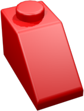
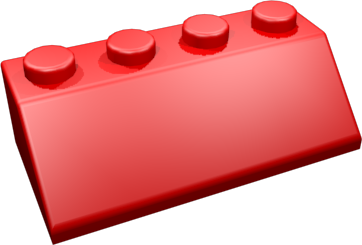
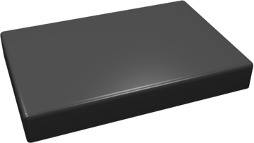

Mon terrain s'étend sur x u², il est cloturé d'un mur de u de haut, avec un portail à l'abcisse . Ma maison a comme dimensions : u x u, elle est placée en (,). Elle a :
- Une porte en façade à u du pignon gauche.
- Une fenêtre en façade à u du pignon gauche.
- Une fenêtre sur le pignon de gauche à u de la façade.
| x | x | ||||
| x | x | ||||
|  | x | x | |||
| x |  | x | |||
| x | x | ||||
| x | x | ||||
|  | x |
Afficher les ouvertures.
Replay: